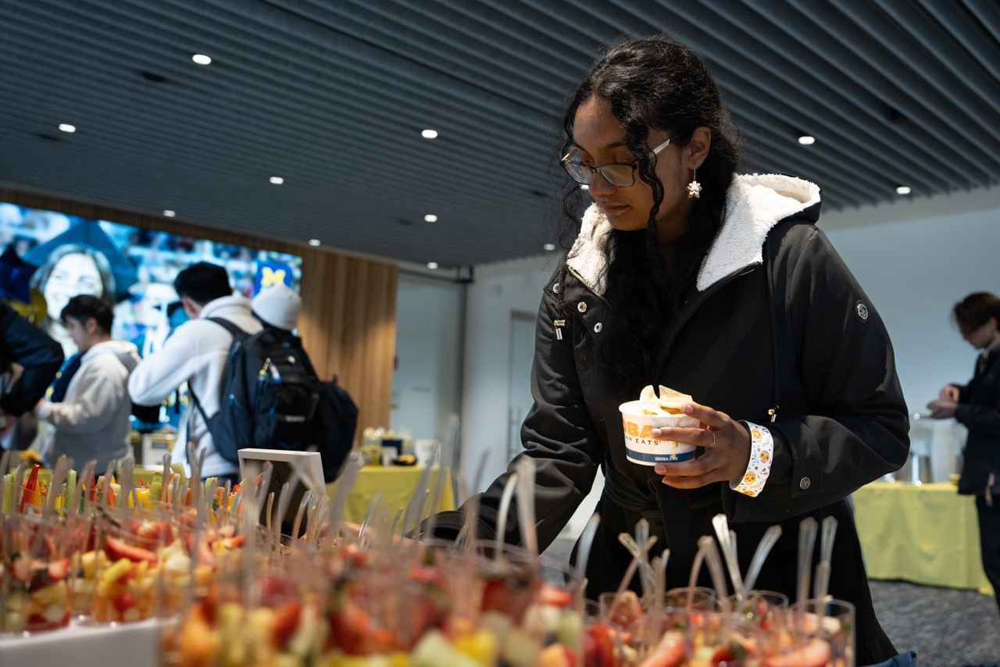

Our Mission
The Maize and Blue Cupboard is here to support the University of Michigan community by addressing food insecurity with compassion and care. We provide immediate access to healthy, nutritious food, along with educational resources and support to help students and staff make informed decisions about their well-being. Whether you’re on a tight budget or face challenges getting to a grocery store, we’re committed to ensuring everyone has equitable access to nourishing food and the tools to prepare it for themselves or others.
What We Provide
- FOOD: Produce, dairy, meat, bread, frozen and shelf-stable foods (i.e. rice, cans, tuna, etc.)
- KITCHEN & COOKING: Dishes, silverware, pots & pans, Tupperware, cutting boards, knives, and other kitchenware
- PERSONAL & HOUSEHOLD: Trash bags, toilet paper, cleaning supplies, hygiene products, school supplies, baby items and more
- SUPPORT: Get connected to campus experts like CAPS, Dean of Students and Financial Aid, as well as SNAP (Michigan’s food program)
Make an Appointment Now
Shopping at the Maize and Blue Cupboard is by appointment only. Please make an appointment by visiting our sign up page here.
Information on Operation
Location
Located in the basement of the Betsy Barbour Residence Hall, please enter via the Maynard entrance only to ensure privacy for residents. Please contact us if you need ramp or elevator access.
- Address: 420 S State St Ann Arbor, MI 48109
- Phone: 734-936-2794
Hours of Operation
- Sunday: 2pm-6pm
- Monday - Thursday: 3pm-7pm
- Friday: 12pm-7pm
- Saturday: closed
Learn More About Us
Read our FAQs to learn more about the Maize and Blue Cupboard and how you can get help.
